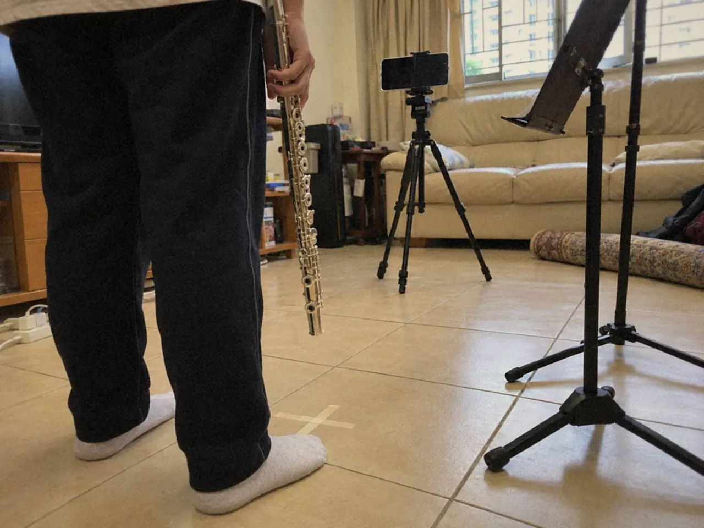
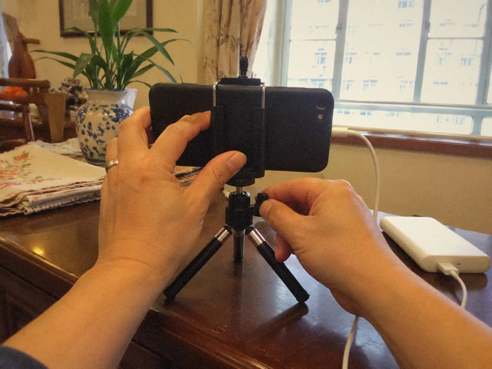

準備錄影考試，先讀所報項目的官方指引，再做一次不提交的完整試錄。畫面、聲音、流程和音樂一併檢查，正式那天就不用反覆重來，演奏也保得住完整。

按下錄影之後，一個小錯就想停下重來，再一個小錯又重來。幾次之後人累了，後面的版本未必比第一次好。錄影的難處，往往在這裏。
鏡頭前怎樣吹得像現場？
把它當作一次完整演出。先設置好場地和光線，定下一次完成的規則，才按錄影。這和平日練習隨手錄一段是兩回事。
開始前弄清楚規則。按所選制度核對畫面、連續錄製、身分資料和提交要求，包括身分核實、曲目資料、鏡頭範圍和檔案提交。
以 ABRSM 演奏考試為例，要錄四首曲，連成一個完整節目；訂考後有 28 天提交影片；六至八級要在影片開頭向鏡頭展示附相片的身分證明 10 秒；同一段影片只可以提交一次。
不同考試或版本可能不同，別只照朋友上次的做法，一切以 ABRSM 數碼考試與錄影指引等官方現行公布為準。
正式拍攝要定合理的次數，兩次之間留休息和回看。若每次都因一個小失誤重來，先判斷整體演奏品質還在不在，再決定下一步。
疲倦下無限重拍，只會把每個音逼到失去自然語氣。目標是在合乎規則的條件下，呈現一次完整的演奏。
為甚麼要先試錄一次？
試錄不提交，用來提早發現演奏以外的問題。它的條件要跟正式一樣：同一個場地、同一套器材、同一個站位，連開頭準備和曲間停頓一起完成。

演奏者要知道何時開始、何時換曲，不能到錄影中途才問下一步。需要的資料也一併走一次。
錄完由頭到尾檢查，別只抽聽最漂亮的一首：
- 聲畫是否完整，最強音有沒有失真
- 人物和樂器是否清楚，畫面範圍合不合要求
- 環境聲有沒有干擾
- 流程是否符合正式指引，檔案是否完整
需要改善的地方分成技術和演奏兩欄，逐項處理。音樂那一欄，再聽曲間停頓和整體是否連貫。
器材與場地要先試甚麼？
技術測試和音樂試奏分開做。先錄一小段最強和最弱的聲音，確認沒有失真，畫面也清楚呈現要求的範圍。
裝置要放穩，電量和儲存空間要充足，然後才開始較長的試錄。

提交格式按適用要求核對，不要憑記憶。全部設定好再試一次，比正式錄到一半才發現手機沒電好得多。
聽回放時可再參考錄音回聽：各樂器怎樣聽。
常見問題
錄影考試可以重拍幾次？
自己先設定合理次數，兩次之間留休息。規則上有沒有限制，請按所報考試的官方指引核對。
錄影前要做甚麼測試？
先錄一小段最強和最弱的聲音，檢查有沒有失真和畫面範圍，再用正式場地和器材做一次完整試錄。
中途吹錯一個音，要停下重來嗎？
先判斷整體演奏品質是否仍在。是否可以停、可否剪接，要看官方規則，以現行公布為準。
開始前，先用手機錄十秒最強音和十秒最弱音，回放聽有沒有失真。